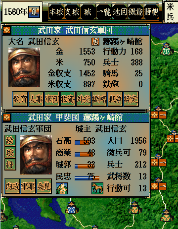

void カスタム::On_プレイヤ担当ターン《メイン画面》() {
}

void カスタム::On_プレイヤ担当ターン《メイン画面》() {
/*
* 関数の使い方や機能をチェックするための実験記載。
*/
int iBushouID = Get_武将番号【配列用】("武田信玄");
Set_弓適性(iBushouID, 弓適性::Ｓ);
フェイドアウト();
カメラ移動(3);
フェイドイン();
効果音再生(効果音音源::豊作);
確認ダイアログ表示("これはプロトタイプだお!!");
}